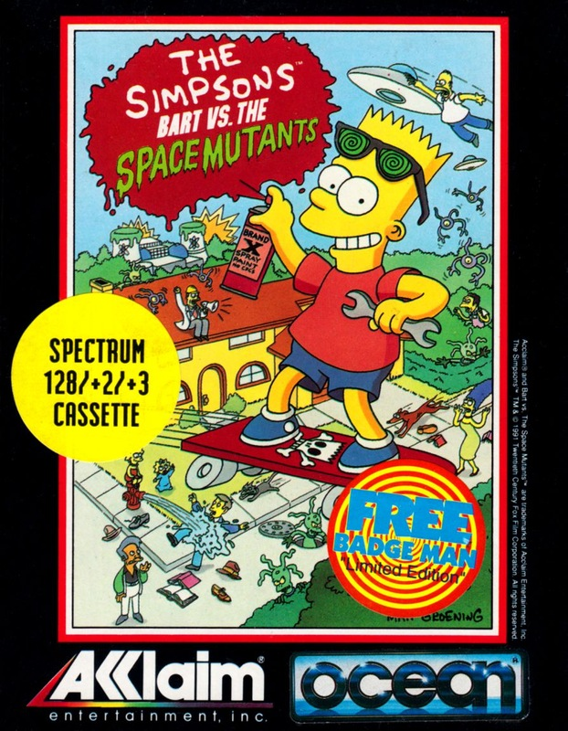
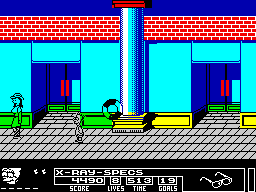
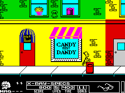

Bart vs the Space Mutants


{kind=link}

| Publisher: | Ocean |
| Price: | £10.99 / £15.99 |
| Year: | 1991 |
| Source: | CRASH, Issue 93 |
The Simpsons are those yellow things on Sky TV. Sadly, RICHARD EDDY’s not terribly au fait with the TV show — but (but! But!) he’s seen the video to Bart’s ‘Do The Bart Man’ which wasn’t half bad (so that’ll have to do).
Ocean’s release is an adaptation of the original Simpsons game that appeared on the Nintendo from video games company Acclaim. Gameplay, at its simplest, is a platform puzzle, with you controlling the irrepressible Bart (who the hell else?).

So, the story: Aliens are invading Springfield! Bart’s discovered a bunch of slimy, gross greenies are taking ever the bodies of Springfield’s residents! Not only that, but the mutants are building a weapon with which they plan to take over the world! Bart’s the only one who knows this and reckons he’s the only one who can stop it happening!
He probably could save the planet on his own, but a bit of help from the rest of the family wouldn’t go amiss. Problem is, Bart’s not renowned for telling the truth and nobody believes him. Would you? Convincing them is one of the game’s objectives.
LEVEL ONE’S BITS

first bit of level two. It’s jolly, it’s
colourful — and that could be a mutant
(check it out!)
Let’s look at level one, which reveals most of the game’s features. We’re in Springfield town. Colourful, isn’t it? Bart can walk or run left and right and leap onto ledges and other supportive objects (a lot of experimenting is needed to work out which ledges/objects Bart can stand on).
As he moves through the town the screens flick from one scene to another, rather than scroll. The town’s crawling with mutant invaders — gribbly creatures that mince about. They’re horrid, and stun Bart, knocking down his hit count, should he come into contact with them (two hits to a life, three lives). Bart’s unarmed at the start, and most of the time it’s best to leap out of the foul creatures’ way.
SPRINGFIELD SNATCHERS
Each level has a set of objectives. Number one is to ‘exorcise’ mutants from the bodies they’ve taken over. Although usually normal people and mutant people look the same, if Bart selects his x-ray specs (from the ‘holding’ menu), he can spot the mutants (they have wiggly things protruding from their heads).
Leaping on a mutant’s head frees the person of their alien inhabitant. Reward is 200 points and a Proof of Existence token. These tokens are important as they light up letters of a family member’s name: on level one it’s Maggie —so exorcise six mutants and she comes to your assistance. Be careful not to leap on the head of a person who isn’t a mutant because Bart’s penalised one hit.
The second objective on each level is to achieve a set goal. This involves collecting objects, scattered around, which the mutants need to build their weapon: collect or ruin the objects and prevent the mutants completing their machine.
PURPLE MUTANT POWER

of Springfield. The path might be clear
and then again it may be swarming with
gribblys and things to collect (like
this screen)
In level one the mutants are after purple objects. Bart clears Springfield of these things by spraying anything purple with red paint. Of course, there’s the matter of finding a spray can and finding another when the first runs out.
Some objects’ colour can’t be changed by using paint, so extra thinking comes into play. Laundry can be used to hide purple objects, and buying Cherry Bombs to lob about turns flighty objects red. Buying? Oh yeah: Bart starts off with 10 coins and can obtain more by doing things or just finding them hidden away. He can buy objects to use in his quest, use coins to play extra games later on, and for every 15 collected an extra life is awarded.
Lots of extras are hidden in the game — extra life icons, invincibility tokens and more! There’s even a skateboarding section which is a lot of fun! At the end of each level Bart faces a major foe — not too difficult to beat but satisfying when you do.
THE BEST OF THE REST...
All levels are packed full of interesting things to do and discover and they’re all great fun to play. Let’s check out the highlights, shall we? (Yes!)
Level two is the Shopping Mall, the goal to collect hats. They may just be lying around but most of the time Bart has to knock them off people’s heads! To start with, this is much like level one but then there’s a bit of solid platform gameplay. Precise movement and pixel-perfect jumping is necessary to leap between the moving platforms — or fall into the dangerous goo on the ground.
The Krustyland Amusement Park is level three. The goal is collecting balloons and, with the aid of a picked-up sling-shot, Bart can take aim and fire! He can also pay to play side-show games which involve chucking darts at target balloons to burst them.
The middle part of the level is set in a fun-house and features a devious puzzle game called Dizzy Doors — it’s hellish to play until the method’s mastered, and you can’t continue until it’s completed. Then there’s a tricky bit of platform action over what look like organ pipes blowing gusts of air. They also chuck up dangerous objects which stun Bart. Tricky, until you’ve played the game a few times! And look at the load of big, bold and colourful graphics — especially the Ferris wheel. Pretty spectacular stuff!
Level four is the Natural History museum and the goal is collecting exit signs. A dart gun, if found, is used to collect the more out-of-reach signs. All the while mutants are crawling around and, as it’s night-time, some of the exhibits come to life! The place is wired up to laser alarm sensors — don’t set one off!
Finally, level five, set in Homer’s place of work, the Nuclear Power Plant. Here all the Simpson family help Bart as he goes, via stairs and elevators, collecting nuclear power rods from around the big building and returning them to the reactor. It’s tough. Very tough!
IS BART ART?
There you have it. Ocean’s big-name game of the year. The license to have. Mega-bucks City. The question is: is it all worth it? And the answer’s a hearty ‘Yes!’ (Hurrah!).
The Simpsons is a great romp into cartoon-land and just look at the screens — packed with colour, and the variety is great.
It plays very well, too: more or less exactly like the Nintendo original, and while it may sound pretty basic (or play pretty basic on your first few goes) it’s when you start discovering things, making use of objects, finding hidden treasures that it really comes alive. And achieving an objective is satisfying because the route to completion can be pretty tough (especially some of the platform elements).
If you’re a Simpsons’ fan the game’s incredibly appealing, the graphics all reflect Matt Groening’s cartoon very well. And how much of a fan you are dictates how much you’re really going to enjoy this. Non-fans can still get loads of entertainment, but some parts may be frustrating if you’re not into the characters.
There’s been lots of umming and ahhing over whether this is a very, very good game or a great Smash. The difference depends on whether you can relate to The Simpsons show and its sense of humour or just think they’re a bit of fun. Me? I loved the game even though I don’t get to see the Simpsons, so I reckon it’s a nice, solid...
RICHARD — 90%
Nick

So, here they are: The Simpsons and the great character of Bart in the lead role. The game’s captured him well — the little sprite even blinks (neat touch). What’s quite striking is that the sprites are all on the small-ish size — don’t be put off: this just means that, effectively, there’s more screen area to play around on. It’s great fun exploring all the locations and discovering all the items. Difficulty levels vary: level one’s easily played through (but discovering all its secrets takes some time), level two starts getting tricky with the moving platforms and level three is a real challenge, especially the Doors puzzle game. Also quite tricky is getting the hang of the ‘holding’ menu from which you can pick stored items — bit fiddly that. The Simpsons is quite a different style of Speccy game, there’s something there for everyone — real family fun!
NICK — 91%
RATING
A packed arcade adventure, ideal for Simpsons’ fans
| Presentation: | 82% |
| Graphics: | 88% |
| Sound: | 80% |
| Playability: | 90% |
| Addictivity: | 91% |
| Overall: | 91% |